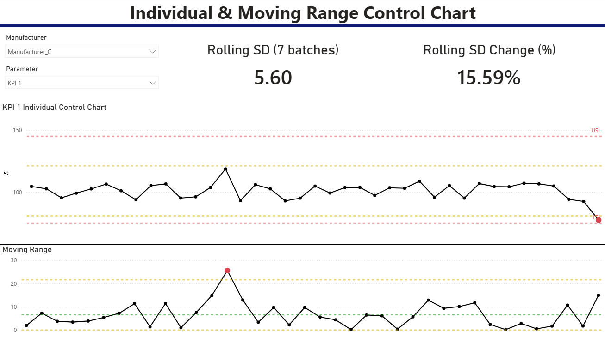
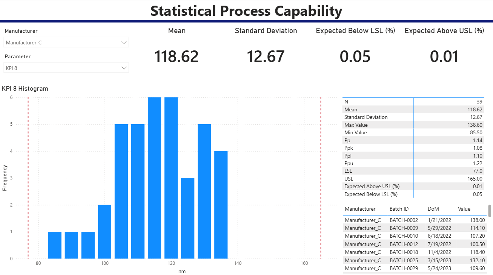

This project demonstrates a Statistical Process Control reporting solution built in Power BI using custom DAX calculations, individual and moving range control charts with dynamic control limits, process capability analysis, and interactive views.
Download Power BI Report (.pbix)
Interactive SPC dashboard with automatic calculation of control limits, moving ranges, outlier detection, and dynamic tooltips.
View DAX
Process capability dashboard including Pp, Ppk, histograms, and specification limit analysis.